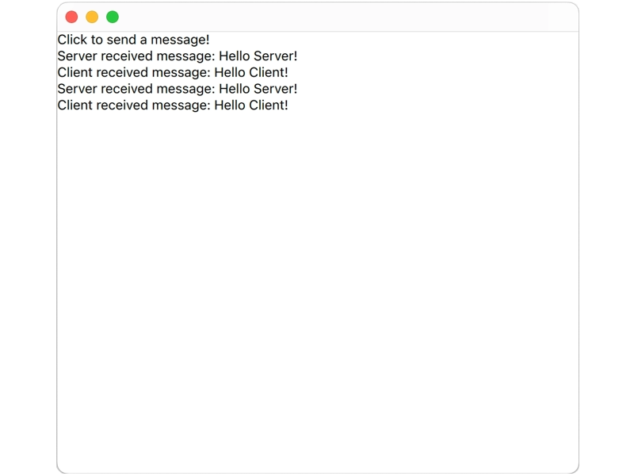

QML WebSocket Server
A simple example that shows how to use a QML WebSocketServer.

This example opens a window and has a WebSocketServer listening for incoming connections and a WebSocket connecting to the WebSocketServer. Every time the window is clicked, the WebSocket sends a message to the WebSocketServer. The WebSocketServer has a signal handler that logs the incoming message to the window and sends a message back again, and the WebSocket has a signal handler that logs the returned message to the window.